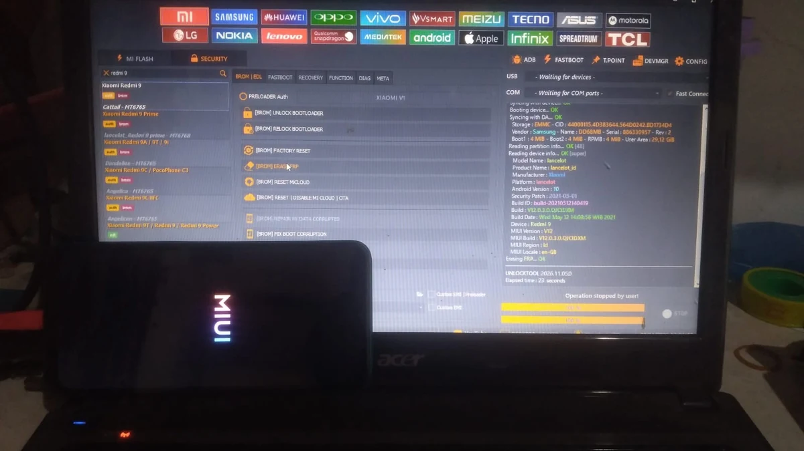

Redmi 9 yang Lupa Jalan Pulang
Kali ini ada Redmi 9 yang datang ke meja servis. Pemiliknya lupa akun Google yang sebelumnya terpasang di HP, jadi minta bantuan untuk bypass FRP.
Sebelum mulai, tentu saya pastikan dulu HP ini memang milik pelanggan. Jangan sampai asal mengerjakan perangkat tanpa memastikan siapa pemiliknya. Selain melindungi pemilik HP, ini juga penting buat keamanan kita sebagai teknisi.
Setelah proses menggunakan UnlockTool selesai, bypass FRP berhasil dan HP sudah bisa masuk ke menu utama.
Foto yang ada di artikel ini kebetulan saya ambil saat HP sedang loading logo MIUI. Jadi bukan berarti HP-nya berhenti di logo, ya. Justru setelah proses selesai, Redmi 9 ini sudah kembali masuk menu.
Sedikit mengenal perangkatnya
Di UnlockTool, perangkat terbaca sebagai Xiaomi Redmi 9 dengan codename lancelot. Informasi yang terlihat antara lain platform MediaTek, Android 10, MIUI V12, dan penyimpanan eMMC.
Informasi seperti ini membantu kita mengenali perangkat yang sedang ditangani. Tetap sesuaikan langkah servis dengan kondisi HP dan jangan asal memilih operasi.
Verifikasi dulu, baru dikerjakan
Kalau ada pelanggan yang lupa akun Google, bukan berarti kita langsung menjalankan bypass begitu saja. Saya tetap perlu memastikan bahwa HP memang milik pelanggan atau ada izin yang sah untuk ditangani.
- Tanyakan kendala dan kondisi HP sebelum dibawa servis.
- Pastikan pelanggan bisa menjelaskan kepemilikan perangkat.
- Bila diperlukan, minta bukti kepemilikan yang wajar, seperti nota atau bukti lain yang relevan.
- Jelaskan risiko kehilangan data jika ada tindakan yang berpotensi menghapus data.
- Kalau kepemilikan atau izinnya meragukan, lebih baik jangan lanjut.
Baca juga
Kalau ingin melihat dokumentasi FRP pada perangkat Samsung, abang bisa lanjut membaca artikel pengalaman bypass FRP Samsung A20. Artikel tersebut membahas kasus perangkat Samsung, sedangkan tulisan ini adalah pengalaman pada Xiaomi Redmi 9.
Video dokumentasi servis
Ini video dokumentasi proses Redmi 9 menggunakan UnlockTool. Logo MIUI yang terlihat merupakan momen saat HP loading; hasil akhirnya bypass FRP berhasil dan perangkat sudah masuk menu utama.
Pengalaman kecil, pengingat penting
Kasus seperti ini jadi pengingat bahwa servis HP bukan cuma soal software dan tombol yang kita klik. Komunikasi dengan pelanggan dan memastikan perangkat memang sah untuk ditangani juga bagian dari pekerjaan.
Semoga dokumentasi sederhana ini bermanfaat buat teman-teman teknisi yang sedang belajar atau pernah menangani kasus serupa.